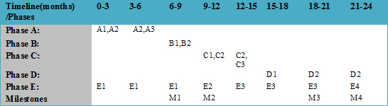

About AEROMAP |
|
|
|
Go to: [Contributors] [Objectives] [Methods] [Results] [Milestones] [Phases] AbstractThe International Panel on Climate Change (IPCC) has identified that the largest uncertainty in current estimates of planetary radiation forcing is due to atmospheric aerosols and has called for an urgent expansion of global studies to monitor and characterise them. Aerosols are characterised by their optical and microphysical properties and while the aerosol robotic network (AERONET) of remote sensing instruments provides accurate values for them, AERONET's coverage of the Earth surface is sparse (mostly city-based) and patchy. The AEROMAP project is designed to provide a solution to overcome this lack of information on global aerosols without the need to invest in hundreds of new AERONET sites. To achieve this, AEROMAP will harness and capitalise on the high resolution full-Earth measurements of aerosol optical depth provided daily by satellite remote sensing instruments. Furthermore, by using satellite-driven data, AEROMAP will be able to gain access to aerosol characteristics over the oceans which are of paramount importance to the estimate of the overall radiation budget. As a result, the retrieval of aerosol optical and microphysical properties by AEROMAP will significantly extend the efforts to globally monitor and characterise atmospheric aerosols. AEROMAP has developed and validated data mining tools based on neural networks to convert satellite measurements of aerosol optical depth and columnar water vapour into aerosol optical and microphysical properties like the single scattering albedo, particle asymmetry factor, complex refractive index and the aerosol size distribution. This is a very challenging problem as satellite instruments, unlike their ground-based counterparts in AERONET, do not yet have the capability to provide polarisation information obtained from the diffuse radiation field. In essence, AEROMAP is attempting to produce a robust inversion algorithm for the retrieval of aerosol parameters analogous to that used by AERONET but without this source of information. AEROMAP's inversion algorithm will then open the door to global aerosol monitoring and characterisation. The inputs to AEROMAP are a small but specific set of satellite measurements. Specifically, daily, full-Earth measurements of the aerosol optical depth (AOD) provided by the MODerate resolution Imaging Spectrometer (MODIS) satellite instrument in 3 wavelength bands (438-448nm, 673-683nm, 862-877nm) spanning the visible spectrum and the near-infrared taken together with a near-infrared measurement of the columnar water vapour, are used as well as the best estimate of the absorption aerosol optical depth (AAOD) at 500nm provided by the Ozone Monitoring Instrument (OMI) satellite. The outputs from AEROMAP are retrievals of over 40 optical and microphysical parameters needed to characterise aerosols. This is accomplished by feeding the satellite data into neural networks that have been trained on AERONET "ground-truth" data to learn the relation between the inputs and output parameters. The result will be global maps of aerosol optical and microphysical parameters at a resolution of 1o x 1o (50km x 50km) which will be used to monitor and classify aerosols as they move daily across the Earth's surface. The main objectives of AEROMAP are to code neural networks to learn the relation between existing satellite inputs and aerosol optical and microphysical parameters for different types of aerosol. AEROMAP will use co-located and synchronous ground-truth data to test that the trained networks can extrapolate the aerosol parameters retrieved from the satellite inputs at the training data location to new and distant geo-locations. AEROMAP will then generate daily-updated global maps of aerosol optical and microphysical parameters and classify aerosol in each pixel by type. AEROMAP will apply the networks to satellite measurements of important extreme aerosol events such as desert dust storms, forest fire outbreaks, urban brown cloud episodes, volcanic eruptions and radiation clouds to assess whether or not it is possible to monitor and track their spatio-temporal characteristics. By updating the global maps with daily satellite over-pass data, AEROMAP will function as a near-real-time monitor of aerosols whose maps and data files will be made publicly-available at the project website/portal. The global aerosol maps will be assessed to develop an aerosol impact scale that will be used for the issuing of alerts and early-warning information about aerosol-related hazards. This project is funded by Marie-Curie Actions at APCG. CONTRIBUTORS
Dr Stelios Kazandzis (Scientist in Charge) APCG-IERSD-NOA
For individual contributors to publications during the course of the AEROMAP project, please see AEROMAP Co-author Index OBJECTIVES (O1-9)
✔ O1: to train MIMO-ANNs to identify the functional relationship between AERONET direct sun AOD data and AERONET AMP retrieval data. METHODS (M1-5)
✔ M1: Machine learning, function approximation and neural network generalisation (O1-3) RESULTS (R1-9)
✔ R1: Identification of the mathematical mapping between AERONET direct sun AOD data and AERONET AMP retrieval data. MILESTONES (M1-4)
✔ M1: Assessment report on the function approximation ability and extrapolation power of the MIMO-ANNs (paper in preparation) PHASES (A-E)
✔ Phase A (Months 1-6): Machine learning, function approximation and generalisation:
✔ Phase B (months 6-12): Independent assessment of results using AMP inversion algorithms:
✔ Phase C (months 9-15): Cluster analysis, aerosol typing and case studies:
✔ Phase D (months 15-24): 3D spatio-temporal mapping and real-time monitoring/alerting feasibility study
✔ Phase E (Months 1-24): Website design, maintenance and public engagement: |
||